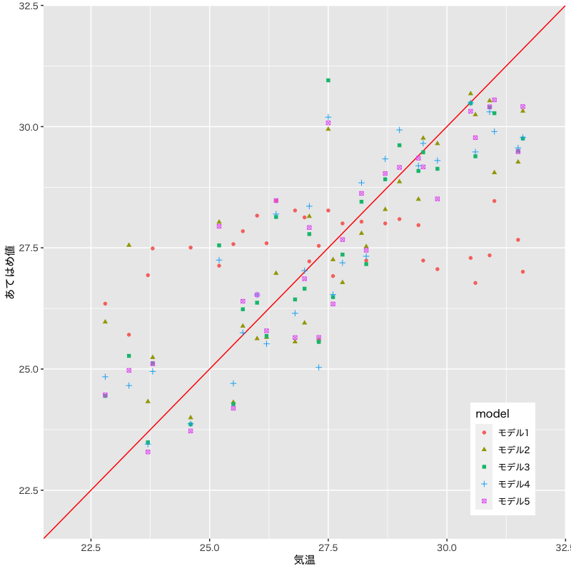

回帰分析
モデルの評価
(Press ? for help, n and p for next and previous slide)
講義の内容
- 第1回: 回帰モデルの考え方と推定
- 第2回: モデルの評価
- 第3回: モデルによる予測と発展的なモデル
回帰分析の復習
線形回帰モデル
- 目的変数 を 説明変数 で説明する関係式を構成:
- 説明変数: \(x_1,\dotsc,x_p\) (p次元)
- 目的変数: \(y\) (1次元)
回帰係数 \(\beta_0,\beta_1,\dotsc,\beta_p\) を用いた一次式:
\begin{equation} y=\beta_0+\beta_1x_1+\dotsb+\beta_px_p \end{equation}誤差項 を含む確率モデルで観測データを表現:
\begin{equation} y_i=\beta_0+\beta_1 x_{i1}+\cdots+\beta_px_{ip}+\epsilon_i \quad (i=1,\dotsc,n) \end{equation}
簡潔な表現のための行列
デザイン行列 (説明変数):
\begin{equation} X= \begin{pmatrix} 1 & x_{11} & x_{12} & \cdots & x_{1p} \\ 1 & x_{21} & x_{22} & \cdots & x_{2p} \\ \vdots & \vdots & \vdots & & \vdots \\ 1 & x_{n1} & x_{n2} & \cdots & x_{np} \end{pmatrix} \end{equation}
簡潔な表現のためのベクトル
ベクトル (目的変数・誤差・回帰係数):
\begin{equation} \boldsymbol{y}= \begin{pmatrix} y_1 \\ y_2 \\ \vdots \\ y_n \end{pmatrix},\quad \boldsymbol{\epsilon}= \begin{pmatrix} \epsilon_1 \\ \epsilon_2 \\ \vdots \\ \epsilon_n \end{pmatrix},\quad \boldsymbol{\beta}= \begin{pmatrix} \beta_0 \\ \beta_1 \\ \vdots \\ \beta_p \end{pmatrix} \end{equation}
問題の記述
確率モデル:
\begin{equation} \boldsymbol{y} =X\boldsymbol{\beta}+\boldsymbol{\epsilon} \end{equation}回帰式の推定: 残差平方和 の最小化
\begin{equation} S(\boldsymbol{\beta}) =(\boldsymbol{y}-X\boldsymbol{\beta})^{\mathsf{T}} (\boldsymbol{y}-X\boldsymbol{\beta}) \end{equation}
解の表現
解の条件: 正規方程式
\begin{equation} X^{\mathsf{T}}X\boldsymbol{\beta} =X^{\mathsf{T}}\boldsymbol{y} \end{equation}解の一意性: Gram 行列 \(X^{\mathsf{T}}X\) が正則
\begin{equation} \boldsymbol{\hat{\beta}} = (X^{\mathsf{T}}X)^{-1} X^{\mathsf{T}}\boldsymbol{y} \end{equation}
最小二乗推定量の性質
- あてはめ値 \(\boldsymbol{\hat{y}}=X\boldsymbol{\hat{\beta}}\) は \(X\) の列ベクトルの線形結合
残差 \(\boldsymbol{\hat{\epsilon}}=\boldsymbol{y}-\boldsymbol{\hat{y}}\) はあてはめ値 \(\boldsymbol{\hat{y}}\) と直交
\begin{equation} \boldsymbol{\hat{\epsilon}}^{\mathsf{T}}\boldsymbol{\hat{y}} =0 \end{equation}回帰式は説明変数と目的変数の 標本平均 を通過
\begin{equation} \bar{y} = (1,\bar{\boldsymbol{x}}^{\mathsf{T}})\boldsymbol{\hat{\beta}}, \quad \bar{\boldsymbol{x}} =\frac{1}{n}\sum_{i=1}^n\boldsymbol{x}_i, \quad \bar{y} =\frac{1}{n}\sum_{i=1}^ny_i, \end{equation}
寄与率
決定係数 (R-squared):
\begin{equation} R^2 = 1-\frac{\sum_{i=1}^n\hat{\epsilon}_i^2}{\sum_{i=1}^n(y_i-\bar{y})^2} \end{equation}自由度調整済み決定係数 (adjusted R-squared):
\begin{equation} \bar{R}^2 = 1-\frac{\frac{1}{n{-}p{-}1}\sum_{i=1}^n\hat{\epsilon}_i^2} {\frac{1}{n{-}1}\sum_{i=1}^n(y_i-\bar{y})^2} \end{equation}- 不偏分散で補正
実データによる例
気象庁より取得した東京の気候データ
month day day_of_week temp rain solar snow wdir wind press humid cloud 214 8 1 Sat 26.1 0.5 19.79 0 NE 2.6 1009.3 77 7.8 215 8 2 Sun 26.3 0.0 19.53 0 SSE 2.4 1011.0 75 5.5 216 8 3 Mon 27.2 0.0 24.73 0 SSE 2.4 1011.0 74 3.8 217 8 4 Tue 28.3 0.0 24.49 0 SSE 2.9 1012.2 77 4.3 218 8 5 Wed 29.1 0.0 24.93 0 S 2.9 1013.4 76 3.3 219 8 6 Thu 28.5 0.0 24.02 0 SSE 3.9 1010.5 79 7.8 220 8 7 Fri 29.5 0.0 22.58 0 S 3.4 1005.0 71 7.5 221 8 8 Sat 28.1 0.0 15.49 0 SE 2.7 1006.1 79 8.3 222 8 9 Sun 28.7 0.0 19.96 0 SSE 2.4 1006.9 77 9.5 223 8 10 Mon 30.5 0.0 20.26 0 SE 2.4 1010.3 73 10.0 224 8 11 Tue 31.7 0.0 25.50 0 S 4.0 1009.7 67 2.8 225 8 12 Wed 30.0 0.5 18.24 0 SSE 2.5 1009.0 79 6.8 226 8 13 Thu 29.4 21.5 19.01 0 N 2.2 1006.4 82 5.0 227 8 14 Fri 29.4 0.0 19.85 0 SE 2.8 1005.5 78 2.0
- 気温を説明する4つの線形回帰モデルを検討する
- モデル1: 気温 = F(気圧)
- モデル2: 気温 = F(気圧, 日射)
- モデル3: 気温 = F(気圧, 日射, 湿度)
- モデル4: 気温 = F(気圧, 日射, 雲量)
関連するデータの散布図

Figure 1: 散布図
観測値とあてはめ値の比較

Figure 2: モデルの比較
- 決定係数・自由度調整済み決定係数の比較
モデル1: 気温 = F(気圧)
[1] "R2: 0.0169 ; adj. R2: -0.017"
モデル2: 気温 = F(気圧, 日射)
[1] "R2: 0.32 ; adj. R2: 0.271"
モデル3: 気温 = F(気圧, 日射, 湿度)
[1] "R2: 0.422 ; adj. R2: 0.358"
モデル4: 気温 = F(気圧, 日射, 雲量)
[1] "R2: 0.32 ; adj. R2: 0.245"
残差の性質
あてはめ値
さまざまな表現:
\begin{align} \boldsymbol{\hat{y}} &=X\boldsymbol{\hat{\beta}}\\ &\qquad(\boldsymbol{\hat{\beta}}=(X^{\mathsf{T}}X)^{-1}X^{\mathsf{T}}\boldsymbol{y}を代入)\\ &=X(X^{\mathsf{T}}X)^{-1}X^{\mathsf{T}}\boldsymbol{y} && (A) \\ &\qquad(\boldsymbol{y}=X\boldsymbol{\beta}+\boldsymbol{\epsilon}を代入)\\ &=X(X^{\mathsf{T}}X)^{-1}X^{\mathsf{T}}X\boldsymbol{\beta} +X(X^{\mathsf{T}}X)^{-1}X^{\mathsf{T}}\boldsymbol{\epsilon}\\ &=X\boldsymbol{\beta} +X(X^{\mathsf{T}}X)^{-1}X^{\mathsf{T}}\boldsymbol{\epsilon} && (B) \\ \end{align}- (A) あてはめ値は 観測値の重み付けの和 で表される
- (B) あてはめ値と観測値は 誤差項 の寄与のみ異なる
あてはめ値と誤差
残差と誤差の関係:
\begin{align} \boldsymbol{\hat{\epsilon}} &=\boldsymbol{y}-\boldsymbol{\hat{y}}\\ &=\boldsymbol{\epsilon} -X(X^{\mathsf{T}}X)^{-1}X^{\mathsf{T}} \boldsymbol{\epsilon}\\ &=\bigl(I -X(X^{\mathsf{T}}X)^{-1}X^{\mathsf{T}} \bigr) \boldsymbol{\epsilon} && (C) \\ \end{align}- (C) 残差は 誤差の重み付けの和 で表される
ハット行列
定義:
\begin{equation} H= X(X^{\mathsf{T}}X)^{-1}X^{\mathsf{T}} \end{equation}ハット行列 \(H\) による表現:
\begin{align} \boldsymbol{\hat{y}} &=H\boldsymbol{y}\\ \boldsymbol{\hat{\epsilon}} &=(I-H)\boldsymbol{\epsilon} \end{align}- あてはめ値や残差は \(H\) を用いて簡潔に表現される
ハット行列の性質
- 観測データ(デザイン行列)のみで計算される
- 観測データと説明変数の関係を表す
対角成分 (テコ比; leverage) は観測データが自身の予測に及ぼす影響の度合を表す
\begin{equation} \hat{y}_{j} = (H)_{jj}y_{j} + \text{(それ以外のデータの寄与)} \end{equation}- \((A)_{ij}\) は行列 \(A\) の \((i,j)\) 成分
- テコ比が小さい: 他のデータでも予測が可能
- テコ比が大きい: 他のデータでは予測が困難
推定量の統計的性質
最小二乗推定量の性質
推定量と誤差の関係:
\begin{align} \boldsymbol{\hat{\beta}} &=(X^{\mathsf{T}}X)^{-1}X^{\mathsf{T}}\boldsymbol{y}\\ &=(X^{\mathsf{T}}X)^{-1}X^{\mathsf{T}}(X\boldsymbol{\beta}+\boldsymbol{\epsilon}) \\ &=(X^{\mathsf{T}}X)^{-1}X^{\mathsf{T}}X\boldsymbol{\beta} +(X^{\mathsf{T}}X)^{-1}X^{\mathsf{T}}\boldsymbol{\epsilon}\\ &=\boldsymbol{\beta} +(X^{\mathsf{T}}X)^{-1}X^{\mathsf{T}}\boldsymbol{\epsilon} \end{align}正規分布の重要な性質:
正規分布に従う独立な確率変数の和は正規分布に従う
推定量の分布
- 誤差の仮定: 独立，平均0 分散 \(\sigma^{2}\) の正規分布
推定量は以下の多変量正規分布に従う
\begin{align} \mathbb{E}[\boldsymbol{\hat{\beta}}] &=\boldsymbol{\beta}\\ \mathrm{Cov}(\boldsymbol{\hat{\beta}}) &=\sigma^{2}(X^{\mathsf{T}}X)^{-1} \end{align}\begin{equation} \boldsymbol{\hat{\beta}} \sim \mathcal{N}(\boldsymbol{\beta},\sigma^{2}(X^{\mathsf{T}}X)^{-1}) \end{equation}
推定量の分布
- 誤差の仮定: 独立，平均0 分散 \(\sigma^{2}\) の正規分布
推定量は以下の多変量正規分布に従う
\begin{align} \mathbb{E}[\boldsymbol{\hat{\beta}}] &=\mathbb{E}[\boldsymbol{\beta} +(X^{\mathsf{T}}X)^{-1}X^{\mathsf{T}}\boldsymbol{\epsilon}] =\boldsymbol{\beta}\\ \mathrm{Cov}(\boldsymbol{\hat{\beta}}) &=\mathbb{E}[ (\boldsymbol{\hat{\beta}}-\boldsymbol{\beta}) (\boldsymbol{\hat{\beta}}-\boldsymbol{\beta})^{\mathsf{T}}] =\sigma^{2}(X^{\mathsf{T}}X)^{-1} \end{align}\begin{equation} \boldsymbol{\hat{\beta}} \sim \mathcal{N}(\boldsymbol{\beta},\sigma^{2}(X^{\mathsf{T}}X)^{-1}) \end{equation}
通常 \(\sigma^{2}\) は未知，必要な場合には不偏分散で代用
\begin{equation} \hat{\sigma^{2}} =\frac{S}{n{-}p{-}1} =\frac{1}{n{-}p{-}1}\boldsymbol{\hat{\epsilon}}^{\mathsf{T}}\boldsymbol{\hat{\epsilon}} =\frac{1}{n{-}p{-}1}\sum_{i=1}^n\hat{\epsilon}_i^2 \end{equation}- この性質を利用してモデルの評価を行う
演習
R: 乱数を用いた人工データの生成
正規乱数を用いた線形回帰モデルの例
### 人工データによる推定量の性質の確認 set.seed(987) # 乱数のシード x.obs <- c(1, 3, 5, 7) # 説明変数の観測値 epsilon <- rnorm(length(x.obs),sd=0.5) # 誤差項の生成 y.obs <- 2 - 3*x.obs + epsilon # 目的変数の観測値 myData <- data.frame(x=x.obs,y=y.obs) # データフレームの作成 beta.est <- lm(y ~ x, data=myData) # 回帰係数の推定 coef(beta.est) # 回帰係数の取得 summary(beta.est) # 分析結果の概要の表示
R: 数値実験 (Monte-Carlo法)
実験のためのコードは以下のようになる
mc <- 5000 # 実験回数を指定 myTrial <- function(){ # 1回の試行を行うプログラム # 乱数生成と推定の処理 return(返り値)} myData <- as.data.frame(t( # 実験結果を転置してデータフレームに変換 replicate(mc, myTrial()))) # Monte-Carlo実験 ## 適切な統計・視覚化処理 (下記は例) apply(myData,2,var) # 各列の分散の計算 plot(myData) # 散布図行列の描画 hist(myData[[k]]) # k列目のデータのヒストグラム
練習問題
- 最小二乗推定量の性質を
数値実験 (Monte-Carlo法) により
確認しなさい
以下のモデルに従う人工データを生成する
説明変数の観測データ:
\begin{equation} \{1, 20, 13, 9, 5, 15, 19, 8, 3, 4\} \end{equation}確率モデル:
\begin{equation} y=-1+2\times x + \epsilon, \quad \epsilon\sim\mathcal{N}(0,2) \end{equation}- 観測データから回帰係数を推定する
- 実験を複数回繰り返し 推定値(\(\hat\beta_{0},\hat\beta_{1}\))の分布を調べる
誤差の評価
各係数の推定量の分布
- 推定された回帰係数の精度を評価:
- 誤差の分布は平均0 分散 \(\sigma^2\) の正規分布
\(\boldsymbol{\hat{\beta}}\) の分布:
\begin{equation} \boldsymbol{\hat{\beta}} \sim \mathcal{N}(\boldsymbol{\beta},\sigma^{2}(X^{\mathsf{T}}X)^{-1}) \end{equation}- \(p{+}1\) 変量正規分布
\(\hat{\beta}_j\) の分布:
\begin{equation} \hat{\beta}_{j} \sim \mathcal{N}(\beta_{j},\sigma^{2}((X^{\mathsf{T}}X)^{-1})_{jj}) =\mathcal{N}(\beta_{j},\sigma^{2}\zeta_{j}^{2}) \end{equation}- \((A)_{jj}\) は行列 \(A\) の \((j,j)\) (対角)成分
標準誤差
標準誤差 (standard error): \(\hat{\beta}_j\) の標準偏差の推定量
\begin{equation} \hat{\sigma}\zeta_j = \sqrt{\frac{1}{n{-}p{-}1}\sum_{i=1}^n\hat{\epsilon}_i^2} \cdot \sqrt{((X^{\mathsf{T}}X)^{-1})_{jj}} \end{equation}- 未知母数 \(\sigma^{2}\) は不偏分散 \(\hat{\sigma}^{2}\) で推定
- \(\hat{\beta}_j\) の精度の評価指標
演習
練習問題
- 数値実験により
標準誤差の性質を確認しなさい
人工データを用いて標準誤差と真の誤差を比較する
### 標準誤差は以下のようにして取り出せる est <- lm(formula, data) summary(est)$coef[,"Std. Error"] # 列名での指定 summary(est)$coefficients[,2] # 列番号での指定．coef と省略してもよい- 広告費と売上データを用いて係数の精度を議論する
- 東京の気候データを用いて係数の精度を議論する
係数の評価
\(t\)-統計量
回帰係数の分布 に関する定理:
\(t\)-統計量
\begin{equation} % \text{(t-統計量)}\quad t=\frac{\hat{\beta}_j-\beta_j}{\hat{\sigma}\zeta_{j}} \end{equation}は自由度 \(n{-}p{-}1\) の \(t\) 分布に従う
- 証明には以下の性質を用いる
- \(\hat{\sigma}{}^2\) と \(\boldsymbol{\hat{\beta}}\) は独立となる
- \((\hat{\beta}_j-\beta_j)/(\sigma\zeta_j)\) は標準正規分布に従う
- \((n{-}p{-}1)\hat{\sigma}^2/\sigma^2=S(\boldsymbol{\hat{\beta}})/\sigma^2\) は自由度 \(n{-}p{-}1\) の \(\chi^{2}\)-分布に従う
\(t\)-統計量による検定
- 回帰係数 \(\beta_j\) が回帰式に寄与するか否かを検定:
- 帰無仮説 \(H_{0}\): \(\beta_j=0\) (\(t\)-統計量が計算できる)
- 対立仮説 \(H_{1}\): \(\beta_j\neq0\)
\(p\)-値: 確率変数の絶対値が \(|t|\) を超える確率
\begin{equation} \text{(\(p\)-値)} = 2\int_{|t|}^\infty f(x)dx \quad\text{(両側検定)} \end{equation}- \(f(x)\) は自由度 \(n{-}p{-}1\) の \(t\) 分布の確率密度関数
- 帰無仮説 \(H_{0}\) が正しければ \(p\)-値は小さくならない
演習
練習問題
- 数値実験により
\(t\)-統計量の性質を確認しなさい
人工データを用いて\(t\)-統計量の分布を確認する
### t-統計量とそのp-値は以下のようにして取り出せる est <- lm(formula, data) summary(est)$coef[,c("t value","Pr(>|t|)"] # 列名での指定 summary(est)$coef[,3:4] # 列番号での指定- 広告費と売上データを用いて係数の有意性を議論する
- 東京の気候データを用いて係数の有意性を議論する
モデルの評価
\(F\)-統計量
*ばらつきの比*に関する定理:
\(\beta_1=\dotsb=\beta_p=0\) ならば \(F\)-統計量
\begin{equation} % \text{(F-統計量)}\quad F= \frac{\frac{1}{p}S_{r}}{\frac{1}{n{-}p{-}1}S} % =\frac{\frac{1}{p}\sum_{i=1}^n(\hat{y}_i-\bar{y})^2} % {\frac{1}{n{-}p{-}1}\sum_{i=1}^n(y_i-\hat{y}_i)^2} =\frac{n{-}p{-}1}{p}\frac{R^2}{1-R^2} \end{equation}は自由度 \(p,n{-}p{-}1\) の \(F\)-分布に従う
- 証明には以下の性質を用いる
- \(S_{r}\) と \(S\) は独立となる
- \(S_{r}/\sigma^2\) は自由度 \(p\) の \(\chi^{2}\)-分布に従う
- \(S/\sigma^2\) は自由度 \(n{-}p{-}1\) の \(\chi^{2}\)-分布に従う
\(F\)-統計量を用いた検定
- 説明変数のうち1つでも役に立つか否かを検定:
- 帰無仮説 \(H_{0}\): \(\beta_1=\dotsb=\beta_p=0\) (\(S_r\) が \(\chi^2\) 分布になる)
- 対立仮説 \(H_{1}\): \(\exists j\;\beta_j\neq0\)
\(p\)-値: 確率変数の値が \(F\) を超える確率
\begin{equation} \text{(\(p\)-値)} = \int_{F}^\infty f(x)dx \quad\text{(片側検定)} \end{equation}- \(f(x)\) は自由度 \(p,n{-}p{-}1\) の \(F\)-分布の確率密度関数
- 帰無仮説 \(H_{0}\) が正しければ \(p\)-値は小さくならない
演習
練習問題
- 数値実験により
\(F\)-統計量の性質を確認しなさい
人工データを用いて\(F\)-統計量の分布を確認しなさい
### f-統計量とその自由度は以下のようにして取り出せる est <- lm(formula, data) summary(est)$fstat summary(est)$fstatistic # 省略しない場合- 広告費と売上データのモデルの有効性を議論しなさい
- 東京の気候データのモデルの有効性を議論しなさい
次週の予定
- 第1回: 回帰モデルの考え方と推定
- 第2回: モデルの評価
- 第3回: モデルによる予測と発展的なモデル